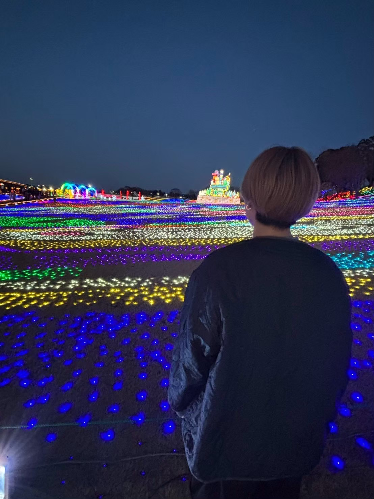
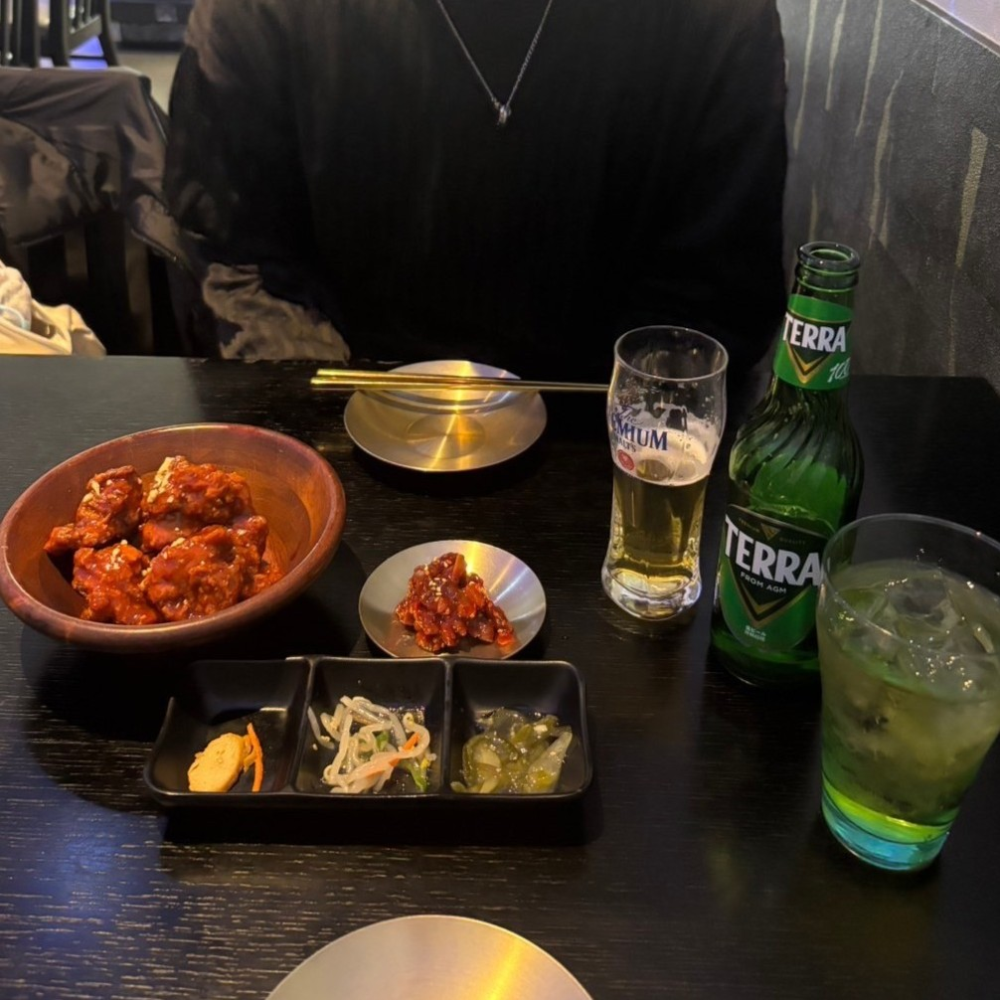
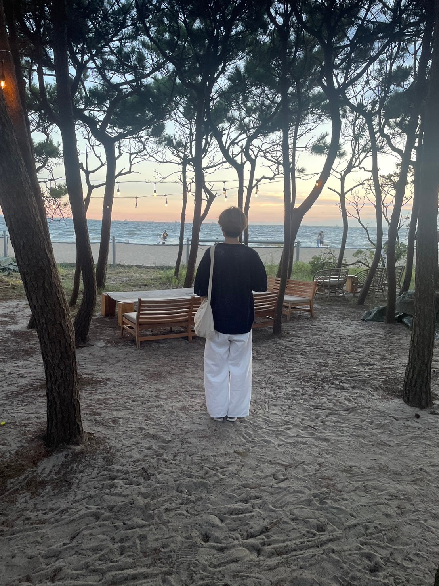
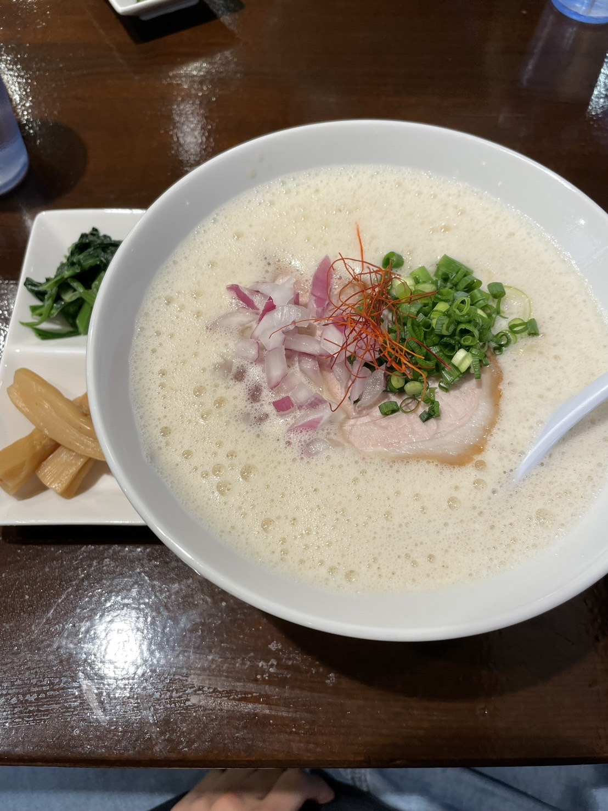
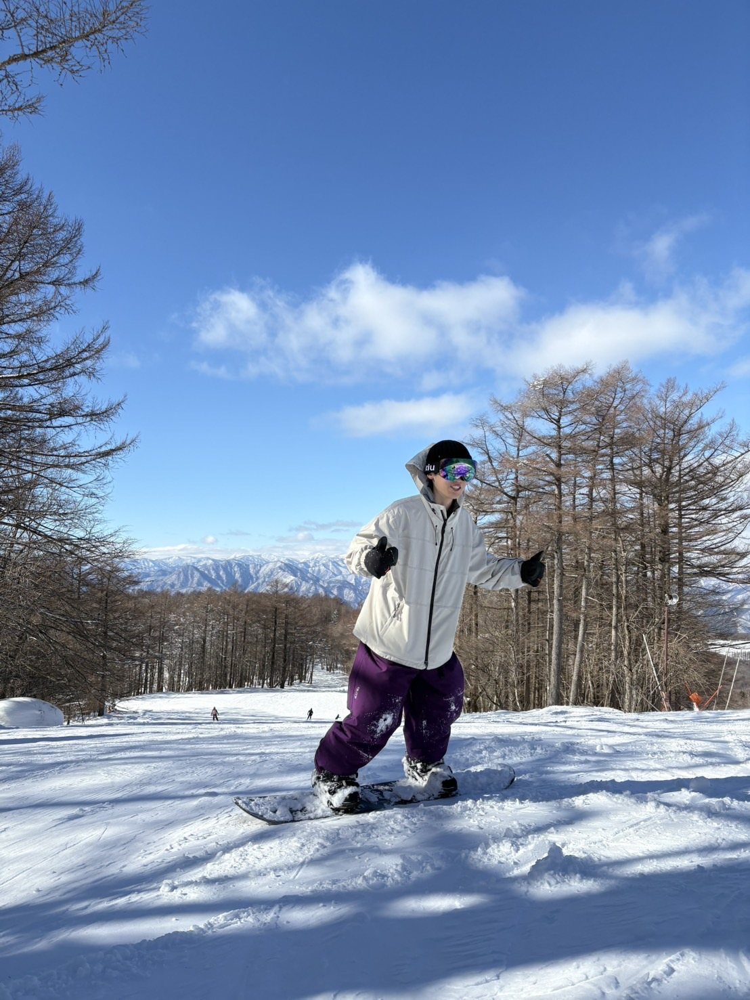
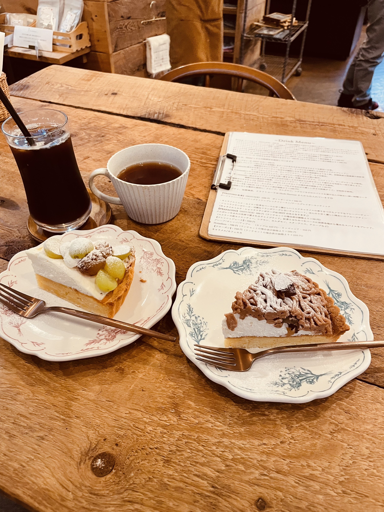
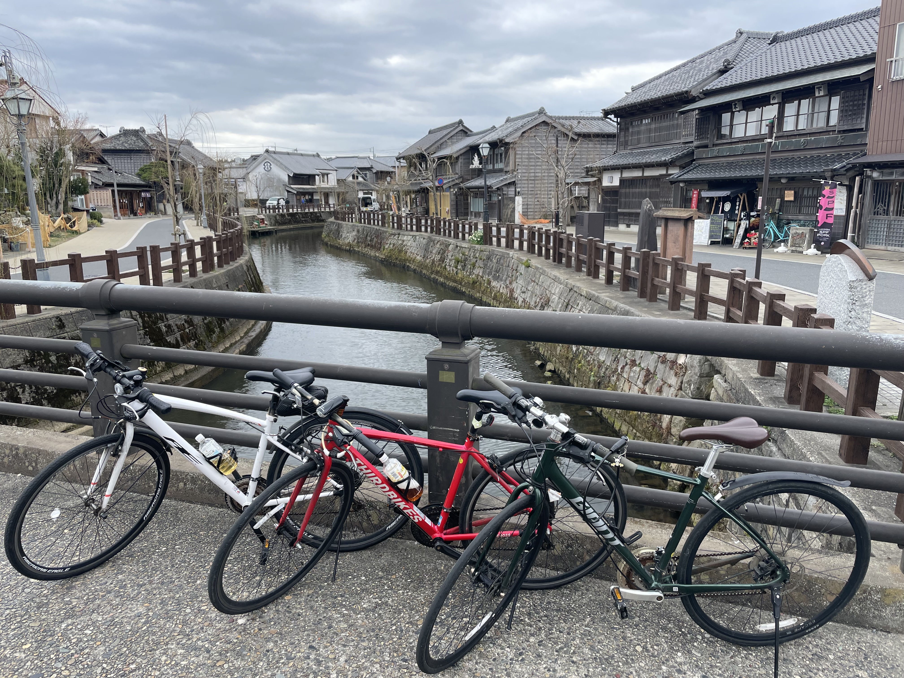

ABOUT ME
scroll
profile
てらき かいと
2004年生まれ。千葉県出身。2023年に千葉工業大学に入学。
現在は独学でデザインやコーディングを学んでいます。
元々プログラミングに興味があり、その中でも成果が目に見え
てわかるWEBサイト制作に強く興味が湧き、WEB デザイナーに
なることを決意しました。
ユーザーやクライアントの目線に立ち、使いやすくやすい、
そして楽しさをWEB サイトを制作できるようなデザイナーを
目指します。

skill
- WEBサイト制作
- バナー制作
- プログラミング
Photoshop/figma
HTML/CSS/JavaScript
strange
真面目
小さな時から様々なことに真面目に取り組んできました。嫌なことでも投げ出さず最後までやり遂げる継続力と、期限を守る責任感が強みです。
没頭力
好きなことに対する没頭力には自信があります。趣味であるカラオケやゲームはもちろん、WEBデザインはまさに好きなことであり、時間を忘れて勉強しています。
観察力
些細な行動や言動から、相手がどのような感情であるかを瞬時に読み取ることができます。そのため、場に応じて臨機応変な対応ができます。
This is a photo that represents me.





